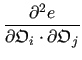
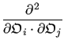
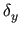
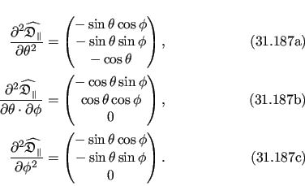

Next: The frame order models Up: Spheroidal dot product derivatives Previous: The dot product gradient Contents Index
The second partial derivative of the single spheroidal dot product δz with respect to the orientational parameters
 and
and
 is
is
|  =  = |
(15.186) |
|  |